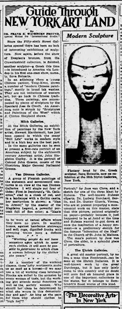

Guide Through New York Art Land
访问原网页 ↗Visit original website ↗

S228 · Dr. Frank E. Washburn Freund / Pittsburgh Post-Gazette · 1930-01-11
弗罗因德记纽约Fifty-sixth Street Galleries将滕圭的画陈列在雕塑展相邻展室，作品多以宽笔墨洗处理。他把滕的画法追溯到中国传统。配图的头像是希腊雕塑家Sava Botzaris的作品。Freund saw Teng-Kwei’s modern Chinese paintings in an adjoining room at the Fifty-sixth Street Galleries and described their broad ink washes in relation to Chinese tradition. The illustrated sculpted head is by Sava Botzaris.
馆藏图像与原文Archived images and documents
- 1930年1月纽约展评原栏（含滕圭段落）Freund’s January 1930 New York review: column detail I101
- 《Pittsburgh Post-Gazette》1930年1月11日原报第11页Pittsburgh Post-Gazette, 11 January 1930, printed page 11 I102


原始网址Original URL
https://news.google.com/newspapers?id=vncoAAAAIBAJ&sjid=6GgDAAAAIBAJ&pg=352,4255242